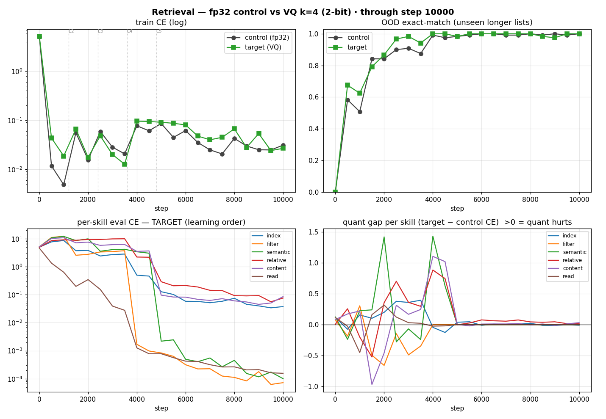
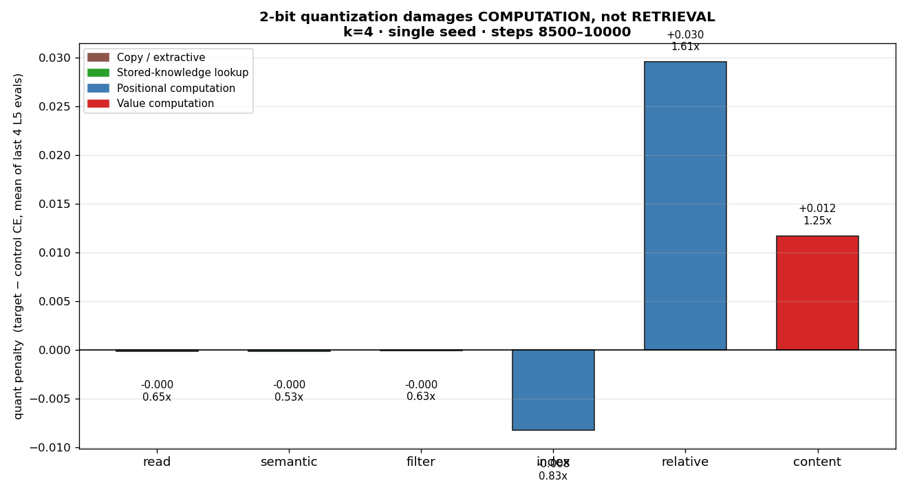
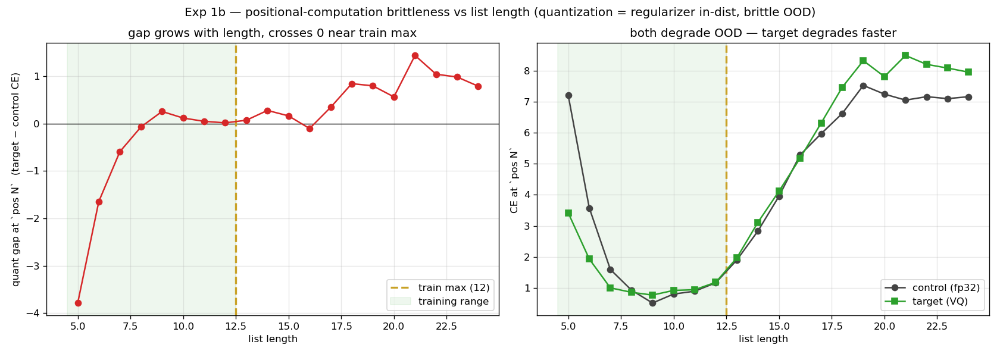
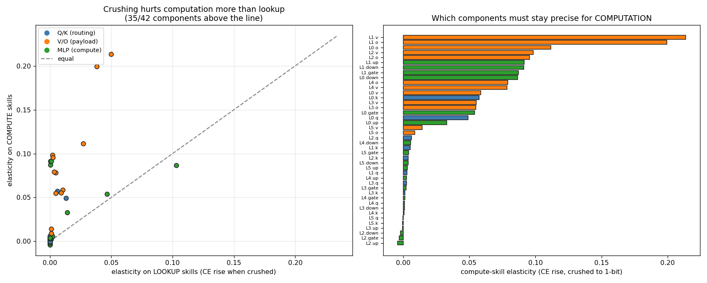
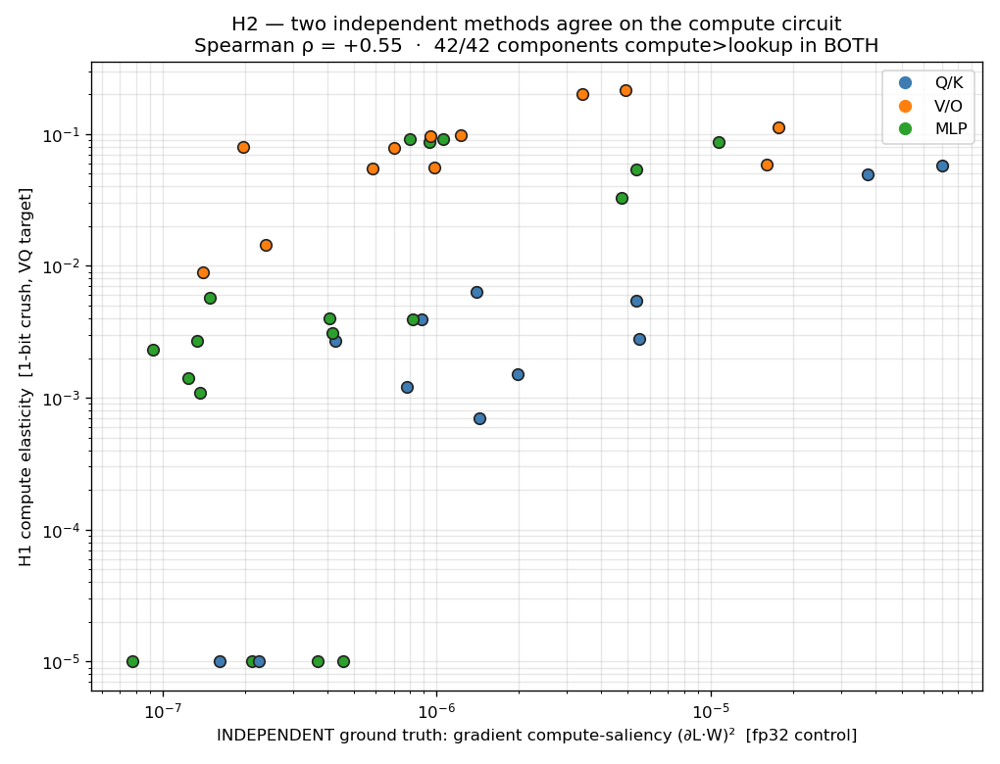

An illustrated walk-through of a small experiment — with every idea shown on a real example.
A miniature language model — the same design as modern LLMs (Qwen/Llama family), just tiny enough to dissect completely.
| size | layers | attention | hidden width | vocabulary | quantized matrices |
|---|---|---|---|---|---|
| 4.32M params | 6 | 8 heads / 4 KV | 256 | 162 tokens | 42 |
Each of the 6 layers has 7 weight matrices we can quantize (the attention Q, K, V, O and the MLP's gate, up, down) → 42 total. Think of each matrix as a panel of dials the model turned during training.

Here is one real row of weights from our trained model (matrix L1.v). Quantizing to 2 bits means: instead of letting each number be anything, we pick just 4 allowed values (a "codebook") and snap every weight to its nearest one.
| 0.007 | 0.022 | 0.009 | −0.036 | −0.027 | −0.049 | −0.011 | −0.004 | 0.017 | −0.007 |
−0.055 −0.020 0.006 0.037
| 0.006 | 0.037 | 0.006 | −0.020 | −0.020 | −0.055 | −0.020 | 0.006 | 0.006 | 0.006 |
Crank it harder — 1 bit = only 2 allowed values (−0.081, 0.075) — and the same row becomes almost a coin-flip of two numbers:
| 0.075 | 0.075 | 0.075 | −0.081 | −0.081 | −0.081 | −0.081 | −0.081 | 0.075 | −0.081 |
This "how coarse can a matrix's dials get before it breaks" is the whole story — and later it becomes our measuring tool.
We feed the model a mixed list of objects and numbers and ask a question. A real example:
Question: "2nd element after first card" → Answer: 52
(Find card — it's at position 4 — then count 2 further to position 6, which holds 52.)
The questions are built to exercise six distinct sub-skills, so we can test each one separately:
| skill | what it does | example | type |
|---|---|---|---|
| read | copy an answer out | emit "52" | copy |
| semantic | recall a hidden property | "ball" is round (never told!) | lookup |
| filter | tell numbers from objects | "coin" is an object | lookup |
| index | count to a position | 3rd from the left | computation |
| content | compare values | first number > 50 | computation |
| relative | locate relative to an anchor | 2nd after "card" | computation |
We train the model to write a scratchpad — its step-by-step working — before answering. Here is the real scratchpad for the example above. Read it like a child's long-division working:
anchor first card → pos 4 "the first card sits at position 4"2 after → pos 6 = 52 "2 further along is position 6, which holds 52"A 52 "answer: 52"pos 4 is just the model writing down a position as a number. "pos N" = "the thing I'm looking for is at slot N." It's the moment the model commits the result of a hard search to paper. This turns out to be the single hardest — and most fragile — step in the whole task.Why is writing pos 4 hard? To produce it, the model must (1) know we mean the object "card", (2) scan the list, (3) find the first one, (4) work out where it is. Everything after that number is written is easy arithmetic on a symbol it can now just read back.
We can measure, token by token, how "surprised" the model is (its loss — high = struggling). Here's a harder, longer version, and the surprise per scratchpad token — full-precision vs 2-bit:
Q: "9th element after first ball" → A: box (first ball = pos 1; 1+9 = pos 10 = box)
| scratchpad token | full-precision loss | 2-bit loss | |
|---|---|---|---|
anchor first ball → pos 1 | 0.0 | 1.2 | easy: ball is first |
… count 9 … | 12.0 | 14.1 | recalling the big offset |
→ pos 10 ⟵ the computed position | 4.3 | 11.9 | computation — quant hurts most |
= box (fetch it) | 6.2 | 8.8 | depends on pos 10 |
every other token (after → pos = ; A) | ~0 | ~0 | trivial glue |
pos 10: full-precision is mildly unsure (4.3), the 2-bit model is lost (11.9). All the difficulty — and almost all the quantization damage — sits on the tokens where the model must compute a quantity. The glue words are free.Measuring the 2-bit penalty for each skill separately:


This one rule explains everything above: memory skills have a small, fixed menu of answers → safe to compress. Computation skills produce quantities that grow with the input → the coarse dials can't keep up once you leave the training range.
If crushing a matrix only hurts computation, we can run it backwards as a diagnostic: go to each of the 42 matrices, crush only that one to 1 bit, and see what breaks. Matrices doing delicate computation will scream; matrices doing simple lookups won't notice.

And crucially, this "coarsen-and-watch" map agrees with a completely different, standard method (gradient importance) run on the uncompressed model — so it's measuring something real, not an artifact:

Full technical write-up in DRAFT.md; all figures and exact numbers in runs/. Every example on this page was pulled directly from the trained model.